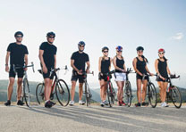
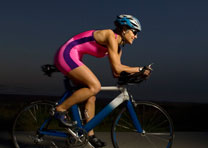

EVENTS
Fedie Bikers Club - Upcoming Events
The Fedie Bikers Club is gearing up for for an exciting calendar of events in the coming Months. As one of the largest and Most active Bikers Clubs in the region, we take pride in bringing our members together through a variety of social gatherings, Charitable initiatives and riding opportunities.
- 
Monthly Club Meetings:
Fedie Club House, Main Street K-Town.
First Saturday of every month, 7 PMJoin us for our monthly club meetings to discuss upcoming rides, events, and club business. All members are encouraged to attend.
- 
Annual Charity Ride.
Fedie Club House, Main Street K-Town.
June 15th, 9 AMOur biggest event of the year! Ride with fellow Fedie Bikers to raise money for the local children's hospital. Ride is 50 miles through the countryside. Lunch and raffle prizes provided.
-

Bike Night at Magheritha Hotel
Magheritha Hotel, Kilembe Road
Every Wednesday, 6 PM - 9 PMGrab dinner and drinks with the club at our weekly bike night at Joe's Diner. Show off your bike, enjoy good food, and socialize with other Fedie Bikers.